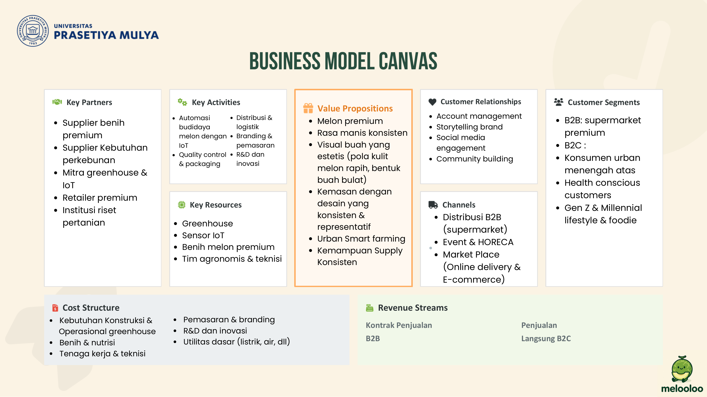
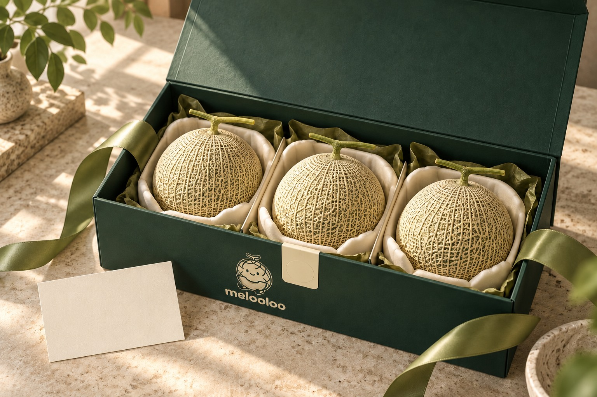
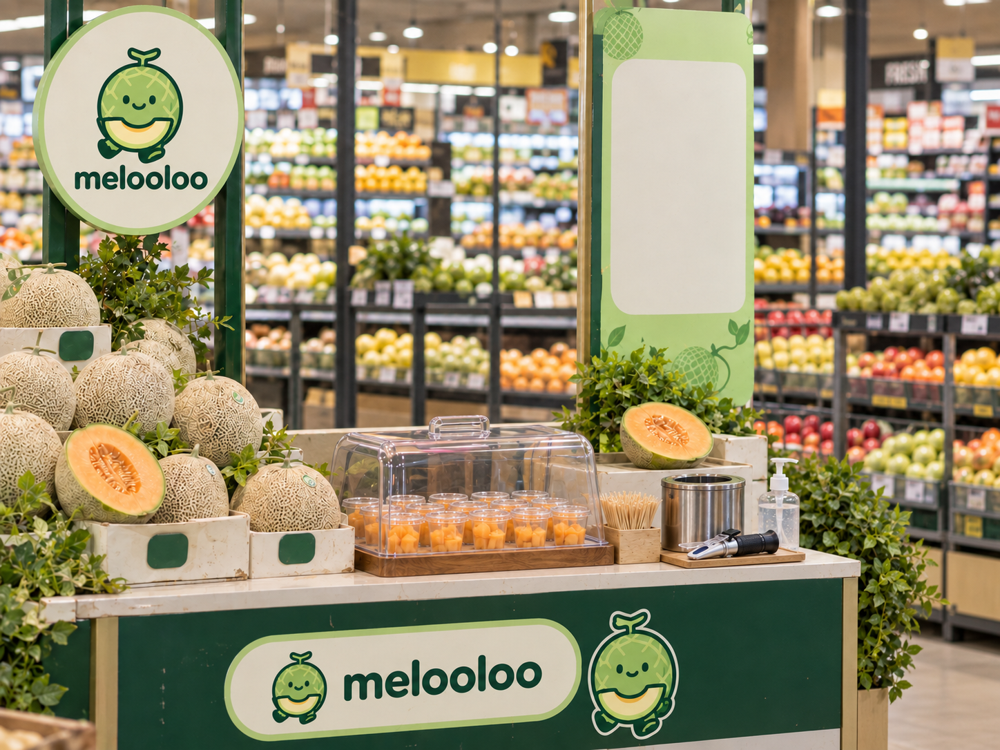
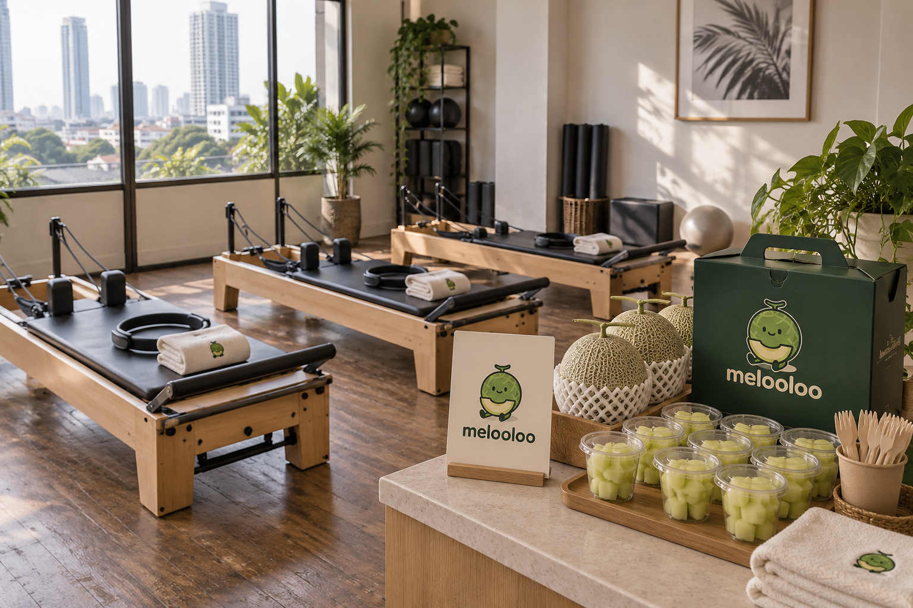
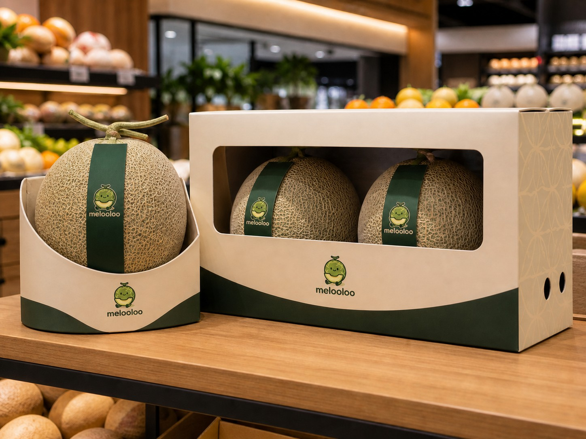
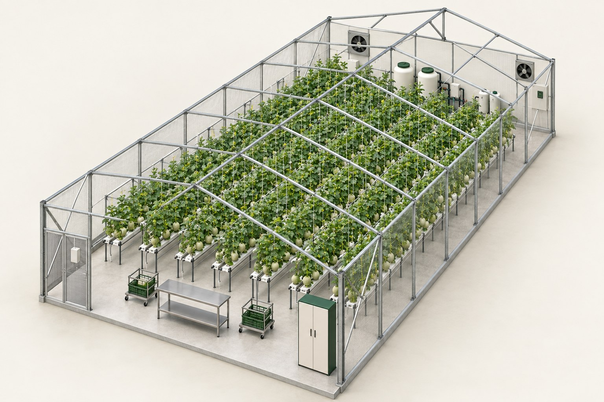
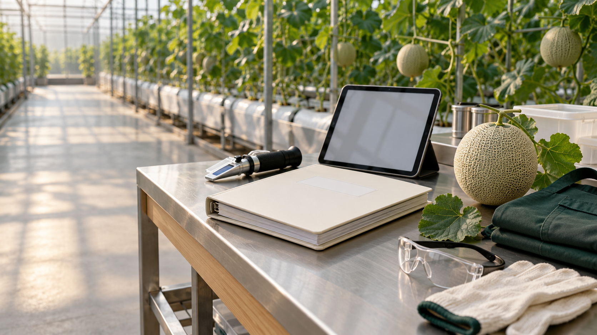

Geometri sebelum panen.
Struktur 200 m² menyediakan 420 titik tanam, jalur kerja, trellis, dan ruang utilitas. Satu tanaman menghasilkan satu buah yang dipilih.
10 × 20 m420 tanaman14 baris
SEBUAH KEBUN DI TENGAH KOTA
Melooloo merancang produksi melon premium melalui smart greenhouse modular, pengendalian mutu berbasis data, dan akses langsung ke pasar Jakarta.
Mulai jelajahKENAPA MELOOLOO
Rencana bisnis memperkirakan kebutuhan melon premium DKI melebihi pasokan bermerek dari produsen lokal. Ini adalah rentang estimasi pasar, bukan penjualan yang sudah terjadi.
Karena alternatif pemasok tetap ada, merek harus membuktikan mutu, ketertelusuran, dan ketepatan suplai.
SATU SISTEM, DUA JALUR PASAR
Greenhouse dan sensor menghasilkan mutu yang ditargetkan. Produk, kemasan, ritel, HoReCa, dan penjualan langsung membawa hasilnya ke pelanggan.

Melon premium dengan rasa, tampilan, dan kemasan yang dirancang untuk ritel dan hadiah.
Sembilan blok lengkap tetap tersedia pada kanvas di samping.
DARI PELUANG KE JALUR JUAL
Melooloo memprioritaskan ritel premium dan HoReCa; pembelian langsung, gifting, dan komunitas membangun hubungan dengan konsumen.

VISUAL KONSEP PRODUKPORTOFOLIO
Harga dasar model: B2B Rp75.000/kg; B2C Rp99.000/kg. Gift box pada sumber pemasaran Rp535.000 per tiga buah.
DISTRIBUSI
AKTIVASI MEREK
Sampling “Uji Manis”, pengalaman kebun, komunitas, dan QR produk menerjemahkan janji kualitas menjadi pengalaman yang bisa dilihat.



Foto aktivasi dan kemasan adalah visualisasi konsep, bukan dokumentasi kegiatan yang telah berlangsung. Anggaran pemasaran pada Canva memakai skenario lama; lihat model keuangan terbaru di bagian keuangan.
MODUL YANG DAPAT DIULANG
Setiap modul dirancang berukuran 10 × 20 meter, dengan 420 titik tanam. Nursery, grow house, sensor, dan pekerjaan agronomis membentuk satu siklus.

VISUAL KONSEP · MODUL GREENHOUSE200 m² per unit; 140 m² area tanam; 14 jalur DFT dengan 30 tanaman per jalur.
Struktur 200 m² menyediakan 420 titik tanam, jalur kerja, trellis, dan ruang utilitas. Satu tanaman menghasilkan satu buah yang dipilih.
Benih tumbuh sekitar 18 hari di nursery. Grow house dipakai 63–66 hari, lalu 7 hari untuk pembersihan dan pergantian larutan.
Suhu dan kelembapan memiliki kontrol otomatis. pH dan kepekatan nutrisi diukur lalu disesuaikan operator dua kali sehari.
Inspeksi harian, penanganan hama, pemilihan buah, pengukuran Brix, sortir, dan rantai dingin menjaga hasil hingga pelanggan.
LOGIKA KONTROL
Desain ini membedakan otomatisasi iklim dari koreksi nutrisi yang masih dilakukan manusia.
Jelajahi sensor dalam 3D ↗DARI UNIT KE JARINGAN
Proyeksi revisi operasi memperluas 35 greenhouse di Jakarta menjadi 237 unit di Jakarta, Surabaya, dan Bali pada Tahun 10.
Angka pertumbuhan adalah proyeksi; faktor hasil 95% sudah tercakup. Program pemuliaan benih Rp4.250 juta pada sumber operasi masih usulan tambahan dan belum masuk proyeksi keuangan dasar.
ORANG DI BALIK SISTEM
Fungsi agronomi, IoT, distribusi, komersial, dan keuangan tumbuh bersama unit greenhouse. Rekrutmen, pelatihan, dan evaluasi diperlukan agar mutu tidak bergantung pada satu orang.
Total headcount mengikuti tabel SDM sumber; rincian per jabatan belum sepenuhnya menjumlah ke total tersebut dan perlu direkonsiliasi.

VISUAL KONSEP PELATIHANRuang foto Carlos, Mery, dan Thoriq sengaja dibiarkan kosong untuk diganti oleh tim.
MODEL KEUANGAN TERBARU
Model sepuluh tahun dari materi keuangan Mery menjadi dasar angka di bagian ini. Semua nilai adalah proyeksi skenario most likely, bukan hasil usaha yang sudah dicapai.
Didanai 100% oleh lima pendiri, masing-masing 20% kepemilikan menurut materi keuangan.
greenhouse untuk tahap awal model
WACC asumsi valuasi
Dana Y0 direncanakan 100% ekuitas, sedangkan WACC dihitung dengan bobot ekuitas:utang 50:50. Perbedaan asumsi ini perlu dijelaskan saat presentasi.
SEPULUH TAHUN, TIGA CARA MEMBACA
Hanya sebesar itu safety margin produksi terhadap break-even volume: 100.548 kg rencana produksi versus 97.251 kg BEP.
UJI KETAHANAN
Pendapatan adalah variabel paling sensitif dalam materi keuangan. Pada skenario pesimis, NPV menjadi negatif.
KEPUTUSAN INVESTASI / MODEL SAAT INI
Indikator model mendukung keputusan GO, dengan syarat penerimaan harga premium, ketahanan produksi, dan arus piutang dikelola secara disiplin.
Kontrak pra-jual B2B, bukti Brix, dan label per buah harus memberi alasan yang jelas untuk memilih Melooloo.
Sensor multi-vendor, prosedur manual, inspeksi hama, dan lebih dari satu lokasi membatasi dampak gangguan.
Termin B2B 40 hari menuntut penagihan aktif dan cadangan kas yang cukup.